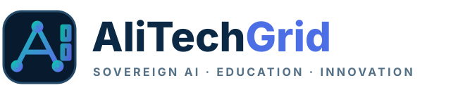

Elegant credential design with controlled, defensible issuance.
Public visitors can explore premium AliTechGrid certificate samples for training, course completion, participation, collaboration, appreciation and acknowledgement. Valid credentials are never issued from the public website.
Professional certificate gallery
The wording changes according to what was actually verified. A participation record cannot be presented as course completion.

AI prepares. Rules validate. Authorized people issue.
Adaptive wording
The issuer engine selects defensible wording based on whether evidence supports completion, participation, appreciation, collaboration or acknowledgement.
Verification
Official records can support public verification by unique ID and QR while keeping protected learner information minimal.
Human authorization
AI may prepare the credential, but only an authorized issuer or approved workflow can release an official certificate.
Issuer controls
Login, MFA, roles, approved templates, protected server-side signatures, audit history, correction and revocation are designed into the authenticated workflow.
Evidence-backed records
Completion-style credentials require appropriate evidence; attendance-only activities remain participation or acknowledgement credentials.
Canada identity, used carefully
The subtle maple accent communicates AliTechGrid's Canada base without presenting the certificate as a government-issued or government-endorsed credential.